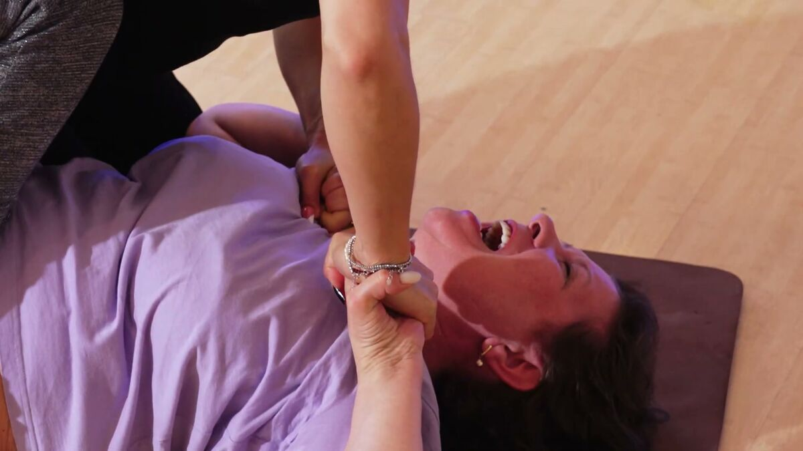
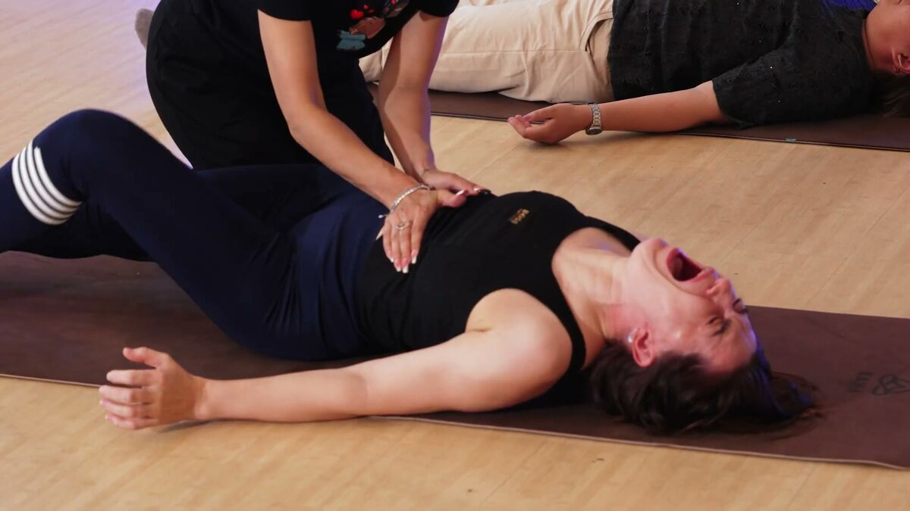

Разговор 20 минут
Бесплатно. Слушаю, с чем вы пришли, и честно говорю, смогу ли помочь и сколько встреч понадобится.
Телесная терапия Ольги Каа. Для тех, кому обследования не дали ответа, а разговоры дали только облегчение.

Обследования в норме. Психолог помог на неделю. А тело всё равно держит. Значит, говорить будем с ним.
С чем приходят
Грудь
Это не диагнозы, а частые связи, которые я вижу в работе. Если есть симптомы, сначала к врачу. Я работаю с той частью, до которой не достаёт таблетка.
Как это работает

Бесплатно. Слушаю, с чем вы пришли, и честно говорю, смогу ли помочь и сколько встреч понадобится.

Вы ложитесь, я работаю с точками на теле, и тело само показывает, где годами было зажато. Кто-то плачет, кто-то смеётся. Потом приходит лёгкость.

Я не веду людей годами. Вы уходите с силами, а если нужно, идёте в терапию уже не с нуля.
Подход основан на методе ПФР и телесной терапии. Это не медицинская услуга и не замена лечению. Перед практикой я прошу заполнить анкету: есть противопоказания.
Телесная практика в Москве, раз в две недели
Четыре-пять часов: чай, дыхание, работа с телом, круг. Для тех, кто давно живёт на автомате и перестал себя чувствовать. Цена растёт вместе с залом: кто раньше, тот дешевле.
Свободно 70 из 70. Сейчас действует цена 4 900 ₽
Первый ряд, 15 000 ₽. Место рядом со мной и личный разбор 20 минут после практики.

20 декабря, практика для пар
Для пар, которые отдалились или уже стоят на грани. Без выяснения, кто прав: через тело вы заново чувствуете себя и друг друга. Я сама прошла развод и знаю, что слова в такой момент не помогают.
25 000 ₽ за пару, 19 000 ₽ при брони до 30 ноября
Личная работа
Мой основной формат. Пакет из 4 или 6 встреч: за одну глубоко не зайти, а годами ходить не нужно.
90 000 ₽
22 500 ₽ за встречу по 2 часа
Если увижу, что вам нужен другой специалист, скажу честно.
Из практики
Девять лет болей в суставах, обследования не находили причину. Мы работали три встречи, и боль, по её словам, ушла.
Клиентка, МоскваМужчина под сорок: приступы по неврологии такие, что он не мог встать с постели. Мы работали одну встречу. С тех пор прошло три года, приступы не возвращались.
Клиент, онлайнЗдесь будут видеоотзывы с именами и лицами. Собираем согласия.
Результат у каждого свой. Истории рассказаны с согласия клиентов и не обещают результат.
Обо мне
Когда я была беременна, у мамы нашли рак четвёртой стадии. Я одновременно сохраняла беременность, семью и бизнес и боролась за маму. Мы подарили ей два года. Потом был развод, суды, измена, и почти в сорок я с ребёнком начала жизнь с чистого листа.
Вытащила меня не терапия годами, а работа с телом. Я стала рассказывать об этом, и мне начали писать сотни людей: «спасибо, что делишься, у меня так же». Так появилась моя практика.
Ко мне приходят руководители, врачи, предприниматели. Те, кто держит всё на себе, сидит на антидепрессантах или годами ищет причину симптомов.
Подкаст
Зову гостей к себе домой и каждому завариваю свой чай. Говорим не об успехе, а о том, что за ним.
Сертификат на практику для того, кто давно держится из последних сил. После оплаты пришлю открытку, её можно положить под ёлку.
Нет. Я работаю с телом и подсознанием: мышечное напряжение, дыхание, телесная память. Без энергий, карт и таблиц болезней.
Ничего не отменяем. Решения о препаратах принимает ваш врач. Я работаю параллельно и с той частью, которая не про таблетки.
Через тело мы попадаем туда, куда разговор идёт месяцами. После пакета вы уходите с ресурсом, и если захотите дальше разбираться в терапии, у вас будут на это силы.
Да. Онлайн я веду через ощущения в теле, без прикосновений. Самый глубокий формат всё же в кабинете.
Есть противопоказания: эпилепсия, тяжёлые болезни сердца, психиатрические диагнозы в острой фазе, поздние сроки беременности. Перед практикой пришлю анкету.
Удобную одежду, носки и воду. Всё остальное напишу вместе с адресом.